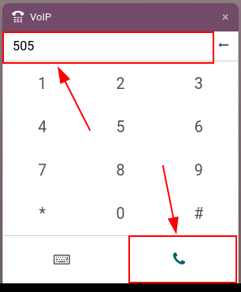

Conference calls¶
Conference calls help employees connect quickly and efficiently, so matters can be discussed in an open forum of sorts. Attendees can be limited, via a sign-in code. That way, confidential matters stay private.
This document covers the configuration of conference calls in Axivox for use in Odoo VoIP.
Add a virtual conference¶
To add a virtual conference room, navigate to the Axivox management console. After logging in, click on Conferences in the menu on the left.
Next, click the green button labeled, Add a conference, and a New conference form appears.

From here, fill in the Name field, and set an Internal extension.
The internal extension is what everyone in the network uses to quickly dial into the conference call, instead of typing in the whole phone number.
Tip
Pick a number between three and five digits long, making it easy to remember and dial.
Next, set the Access code, if the conference room requires security. This is a password to get into the conference, once the extension for the conference is dialed. Immediately after dialing the extension, a digital receptionist prompts for the Access code.
In the Administrator extension field, click the drop-down menu, and select the user’s extension that manages the call.
Finally, in the Wait for the administrator to start the conference field, click the drop-down menu, and select Yes or No.
Should the selection be Yes, then nobody is allowed to utilize the virtual conference room until the administrator is present, and logged into the conference call.
When all fields are filled in, be sure to Save the configuration. Then, click Apply changes in the upper-right corner to implement the change in production.
Upon doing so, the conference is added, and the Axivox administrator has the option to Delete or Edit the conference from the Axivox Conference main dashboard.
To invite an Axivox user to a specific conference call, click Invite to the right of the desired conference, and proceed to enter the extension or phone number of the invitee in the pop-up window that appears.
Once the extension or number is added into the Please enter the phone number of the person you want to invite field, click the green Invite button, and the recipient immediately receives a phone call, automatically linking them to the conference.

Incoming numbers¶
To open a conference to a wider audience, an Axivox conference can be linked to Incoming numbers.
To do that, log into the Axivox management console, and click Incoming numbers in the menu on the left.
On the Incoming numbers dashboard, click Edit to the far-right of the Number to which the conference should be attached.
Then, under the first field, labeled, Destination type for voice call, click the drop-down menu, and select Conference.
Next, in the Conference field, click the drop-down menu, and select the specific conference that should be attached to this incoming number.
Now, whenever this incoming number is dialed, the caller is let into the conference, if there is not an Access code required. If there is an Access code required, the caller is then prompted to enter the Access code to enter the conference.
Start call in Odoo¶
Anywhere in the Odoo database, open the VoIP widget, by clicking the ‚òéÔ∏è (phone) icon, located in the upper-right corner. Then, dial the specific extension number for the conference, and click the üìû (phone) icon.
Once the digital receptionist answers, enter the Access code (if needed), and press the # (pound) icon/key.